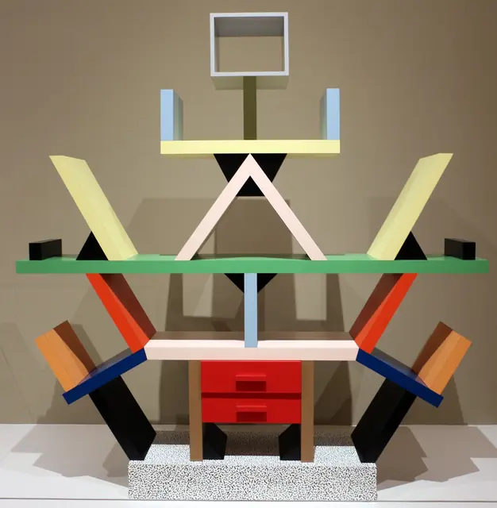
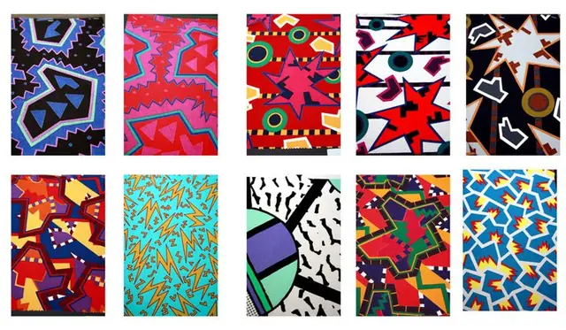
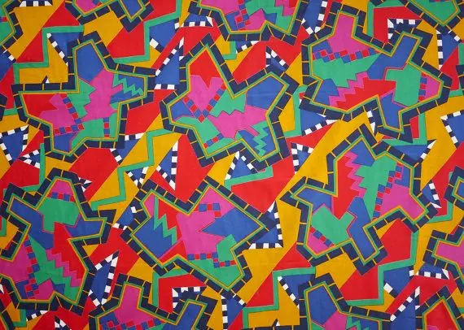
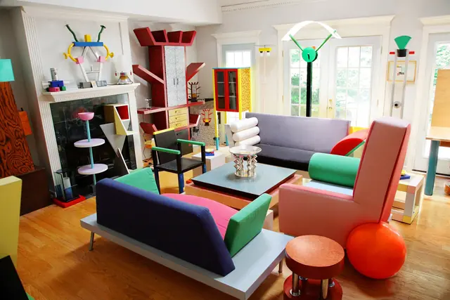
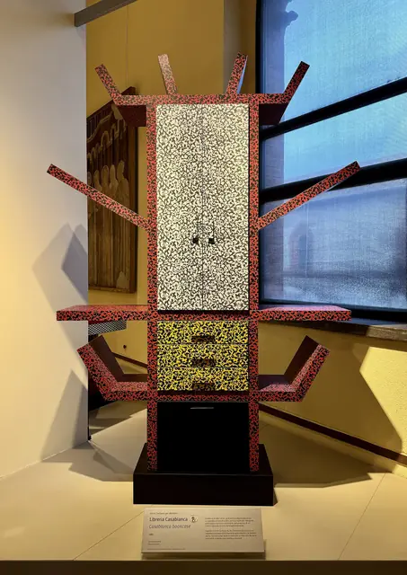
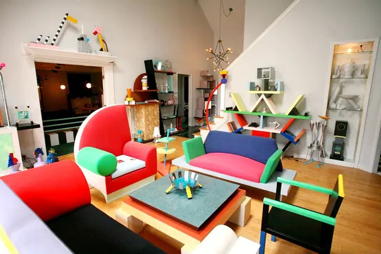

The feel
Memphis furniture looks as if it walked off the pages of a comic book, all garish colour and wild pattern, mixing popular culture, advertising and postmodernism.1 It was a rude gesture at the design establishment, after years in which colour and decoration had been taboo,2 and the group's declared aim was to celebrate the banal and everyday and to break the taboos of good taste.1
Every piece is meant to talk: like television and computers, Memphis objects were supposed to communicate with the viewer and tell their own story,1 and Barbara Radice, the group's art director, wanted colour and pattern to make the pieces "vibrate" and give the viewer a jolt.3,4 The historian Glenn Adamson calls them media-ready objects whose main purpose was arguably to be photographed.5 None of it was a joke to the people making it: Nathalie Du Pasquier, whose patterns covered the furniture,6 says bright colours are not childish and that the press mistook ideas the group took very seriously for fun.7
- loud
- tilted
- laminated
- bad on purpose
- Milanese
- confetti
- Saturday morning
Where it comes from
In December 1980 Ettore Sottsass, a veteran of Italian design then in his 60s, gathered designers in their 20s at his Milan flat to plan a line of furniture,2 in part as a showcase for the plastic veneers of his client Abet Laminati.5 As Barbara Radice tells it, they named the project after Bob Dylan's "Stuck Inside of Mobile with the Memphis Blues Again", which kept sticking on the record player, and liked that Memphis was also the capital of ancient Egypt.2 The first collection opened at the Arc '74 showroom in Milan on 18 September 1981, a riot of laminates, lacquers, burr wood, patterns and colour.8 Sottsass left in 1985 and the group broke up a couple of years later,3 but its harsh geometry, vivid colour and riotous pattern spread to clothing, music videos and packaging,5 and to television, from MTV to Saved by the Bell.4
Core elements
Plastic laminate on fine furniture
Patterned plastic laminate, a cheap material better known from kitchen worktops, became a Memphis trademark.1,3 Its use was influenced by American diners and the wipe-clean furniture of the kitchenette,9 but it went onto finely handcrafted pieces for the top of the market, next to hardwood, lacquer and brass, so that high and low meet in one object.10,3
The decorated surface
After modernism had abandoned decoration, the group wanted the decorated surface to be the protagonist again, not something added on top.6 George Sowden's theory was that changing the surface of an object changes its meaning.7 Sottsass's Bacterio, a field of black squiggles abstracted from the surface of a temple in Madurai, India, is the pattern most tied to Memphis,11 and Du Pasquier's exuberant patterns covered Memphis pieces until 1987.6
Garish colour against black and white
Colour comes in flat pop-art blocks,12 garish enough to look lifted from a comic book.1 It sits right up against black and white: Carlton stacks green, yellow, blue, red and pink shelves on a base of black-and-white Bacterio,3 and Masanori Umeda's Tawaraya boxing ring has a monochrome striped base under pastel ropes.2
Tilted geometric forms
Forms are geometric archetypes used in unexpected ways,5,12 with diagonals where you expect horizontals and verticals.12 Carlton's slanted shelves look random but sit on a logical system of real and implied equilateral triangles, and the slant holds books that would fall over on upright shelves.10
Anthropomorphic furniture
Pieces read as figures: Carlton can be read as a robot greeting you with open arms or as a many-armed Hindu goddess,10 Casablanca's red shelves radiate from a central totem into an anthropomorphic silhouette,9 and Martine Bedin put her Super lamp on wheels so that it could follow its owner around like a pet.5
Suburban kitsch
Memphis was "quoting from suburbia", in Sottsass's words, with laminates printed in the kitsch geometric and leopard-skin patterns of 1950s comic books and cheap cafés.2 It took ordinary images such as the almond-pattern metal of 1950s bus stops and the laminate of old bar chairs and raised them to luxury objects, and it named the first pieces, Carlton, Plaza and Splendid, after hotels.8
How to do it
Block out on a triangle grid
Build each piece from geometric forms, and use diagonals where a cabinet would normally run horizontal and vertical.12 Lay the slants out on equilateral triangles, as Carlton does under its random look, and model at real scale: Carlton stands 194.9 cm high, 189.9 cm wide and 40 cm deep.10
Choose colour or pattern for every part
Before texturing, decide which parts get a block of colour and which get a pattern, and pick patterns and colours nobody would expect on that object.12 Put black and white right next to the loudest colour, the way Carlton's bright shelves stand on a black-and-white Bacterio base.3
Draw the patterns by hand
Du Pasquier sketches in colour pencil and builds her repeats by cutting and pasting, a rule she calls natural and pre-computer.13 Old textiles taught her that everything had been done already and the rest was a question of scale and colour.6 Once a motif works, turn the drawing itself into a pattern, so it repeats as a fill.14
Abstract an everyday surface
Sottsass's laminate designs start from ordinary materials such as terrazzo, chain mesh and sponges, and for Bacterio he drew the surface of a temple in Madurai and abstracted it into a field of black squiggles.11 For a vector squiggle, Grace Fussell draws a straight line, gives it a 4 pt wavy stroke, then copies it into a block of wavy lines.15
Texture each panel as laminate
Treat each surface as a printed sheet on a flat board, the way Casablanca is plastic laminate over fibreboard.9 Put the print in the base colour (albedo) texture and set the roughness, which runs from 0, a perfect mirror, to 1, which blurs the reflection completely.16 For flat blocks of colour, use an unshaded material, which outputs the base colour directly and ignores lights.16
Shape and name each prop
Shape objects so they read as characters, and let the odd shapes do a job: Casablanca's angled arms are there to hold wine bottles,9 and the Super lamp sits on wheels like a strange, glowing pet.1 Then name them after somewhere glamorous: Radice gave the first year's pieces the names of international hotels and Du Pasquier's textiles the names of African countries.7
Build the lettering from shapes
For a Memphis title, Fussell builds each letter from rectangles, diagonal stripes and half ovals, fills some of them with dots or squiggles, and sets overlapping shapes to Multiply.15 Her swatches are CMYK: pink C0 M76 Y0 K0, red C4 M83 Y84 K0, yellow C2 M9 Y91 K0, mint C53 M0 Y34 K0 and blue C63 M0 Y12 K0.15
Cheat sheet
Do
- Let colour, pattern and shape argue with function, the way Casablanca's garish colour and winged shape went against the modernist belief that form should follow function.9
- Mix cheap and precious materials in one piece, such as laminate next to hardwood, lacquer and brass.3
- Borrow ordinary images, from bus-stop metal to bar-chair laminate, and raise them to luxury.8
- Give every object a story of its own to tell the viewer.1
Avoid
- Corporate Memphis. The flat, long-limbed cartoon figures and pastel palettes of tech branding borrowed the name for a shared love of bright colour, and the producer who coined it says the style blends into the background.17
- Playing it as a joke. Du Pasquier says Memphis was misunderstood as fun, when its colours and patterns were extremely serious to the people making them.7
- A plain object with a pattern pasted on. For Memphis the decorated surface was a different thing from the decorated object.6
- Staying tasteful. The group's declared aim was to break the taboos of good taste.1
Tools and tutorials
- Abet Laminati: Bacterio
Bacterio and how Sottsass drew it, from the company that made the Memphis laminates.11,5
- Hero Patterns
Free repeating SVG patterns that you can recolour and shake up.
- Inkscape: creating custom patterns
Turn any drawing into a repeating fill, for free.14 Good for terrazzo and confetti.
- Godot: Standard Material 3D
Albedo for the print, Roughness for the sheen, and Unshaded for flat colour.16
- How to Create a Memphis Style Text Effect in Adobe InDesign
Grace Fussell builds Memphis lettering from rectangles, diagonal stripes, half ovals and wavy lines.15
Palette
Sampled from the four images above. Click a chip to copy its hex value. The machine below shakes these colours into a new pattern, and you can keep whatever falls out.
Feel the vibe
In motion
Listen
The song the group was named after, as Radice tells it: it kept sticking at "Memphis Blues Again" on Sottsass's record player.2
YouTubePaper-thin characters, loud colours and kick, punch, chop.
YouTubeDelighted, unhinged and impossible to dislike. That mood is what you are after.
YouTubeLethal League Blaze's soundtrack. The same hard edges, in sample form.
YouTubeFrom one of the shows that carried the Memphis look onto 1980s television.4
YouTube
More references






Games
- PaRappa the Rapper
Study its flat, bright characters, cut out like paper and set in a 3D world. A visual parallel with real wit.
- Broken Reality
Study how it uses pattern scale to tell near from far.
Film, art and more
- Memphis Group
The group, its members and how it ended.
- Ettore Sottsass
He led the group.2 Start with his Carlton room divider and Casablanca sideboard.10,9
- Nathalie Du Pasquier
Her patterns covered Memphis furniture until 1987.6
- Saved by the Bell
One of the TV shows where the Memphis influence could be seen.4
- Corporate Memphis
What not to do: the flat, long-limbed figures of tech branding, named for Memphis's bright colour.17
Sources
- 1Memphis: 40 Years of Kitsch and Elegance
- 2Memphis
- 3How Memphis developed from an informal gathering of restless creatives into one of design's most influential movements
- 4Memphis: Plastic Field. Family Guide
- 5The rise and fall of Milan Memphis
- 6Nathalie du Pasquier: My Influences
- 7Q&A: Nathalie Du Pasquier, the Queen of Memphis
- 8Memphis. Twenty years on
- 9Casablanca sideboard
- 10"Carlton" Room Divider
- 11Bacterio | Ettore Sottsass
- 12Designers and builders: Great art ideas for teachers, inspired by the Memphis Design Group
- 13Nathalie Du Pasquier
- 14Creating Custom Patterns
- 15Quick Tip: How to Create a Memphis Style Text Effect in Adobe InDesign
- 16Standard Material 3D and ORM Material 3D
- 17A primer on Corporate Memphis, Big Tech's favorite design trend